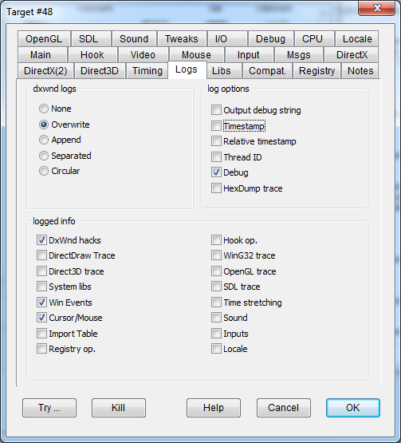

Handles dxwnd.log logs. For collecting the basic log information select: "Overwrite", "DxWnd hacks", "DirectDraw Trace", "Direct3D trace" and "Debug". Then run your game until the problem occurs and close the game. This will then save a log file called dxwnd.log into your game folder.
Warning: Do not run your game long with logs enabled. This may create a HUGE file.
See: Taking Logs Tutorial
|
None |
No logs. |
|
Overwrite |
Logs will erase and overwrite an existing dxwnd.log file. |
|
Append |
If a log exists, logging messages will be added to the existing file. Otherwise, a new file will be created. |
|
Separated |
Each session will write to a new, separate log file named dxwnd<n>.log where n is the smallest usable number to avoid filename conflicts. |
|
Circular |
In circular logs mode dxwnd.log is filled with up to 50000 messages and then swapped to dxwnd.0.log. |
|
Output debug string |
OUTDEBUGSTRING |
Each log message will be also generated as a debug message. This can be useful to show the logs while they occur by using a runtime scrollable view such as that offered by the DebugView.exe tool. |
|
Add timestamp to log |
ADDTIMESTAMP |
Adds a timestamp with the system tick count (from GetTickCount() calls) to the beginning of each line in a log file. |
|
Relative timestamp |
ADDRELATIVETIME |
If the "Add timestamp to log" option is on, the "Relative timestamp" option adds a timestamp to the beginning of each line in a log file that measures the duration between that line and the previous one. This makes it easier to spot long operations. |
|
Thread ID |
ADDTHREADID |
Adds a thread id to log messages. |
|
Debug |
OUTDEBUG |
Writes some more detailed information for diagnostic purposes. |
|
HexDump trace |
OUTHEXTRACE |
When set, some complex information is logged also in full hexadecimal format. |
|
DxWnd hacks |
OUTDXWINTRACE |
Logs all significant events that DxWnd performs to run the fullscreen program in windowed mode. |
|
DirectDraw trace |
OUTDDRAWTRACE |
Logs DirectDraw operations. |
|
Direct3D trace |
OUTD3DTRACE |
Logs Direct3D operations. |
|
System libs |
OUTSYSLIBS |
Logs system library calls. |
|
Win Events |
OUTWINMESSAGES |
Logs all Window messages intercepted in the application's queues, along with events that are generated or processed internally by the Peek/GetMessage APIs. |
|
Cursor/Mouse |
OUTCURSORTRACE |
Logs all cursor- or mouse-related operations. Note that some old games don't mind the possibility of concurrent use and perform many mouse/cursor operations in a short period of time. This type of log can quickly grow quite large. In this case, consider slowing down the program with the “Slow Down” flag. |
|
Import Table |
OUTIMPORTTABLE |
Logs the Import Table as seen by DxWnd. This can be quite useful to analyze and troubleshoot uncommon executables (e.g. when copy protections are applied). |
|
Registry op. |
OUTREGISTRY |
Logs registry operations. |
|
Hook op. |
TRACEHOOKS |
Logs hooking operations. |
|
WinG32 trace |
OUTWGTRACE |
Logs WinG32 operations |
|
OpenGL trace |
OUTOGLTRACE |
Logs OpenGL operations |
|
SDL trace |
OUTSDLTRACE |
Logs SDL operations |
|
Time stretching |
OUTTIMETRACE |
Logs time stretching transformations - beware, it can produce very big log files. |
|
Sound |
OUTSOUNDTRACE |
Logs DirectSound operations. |
|
Inputs |
OUTINPUTS |
Logs DirectInput operations. |
|
Locale |
OUTLOCALE |
Logs locale transformation operations. |